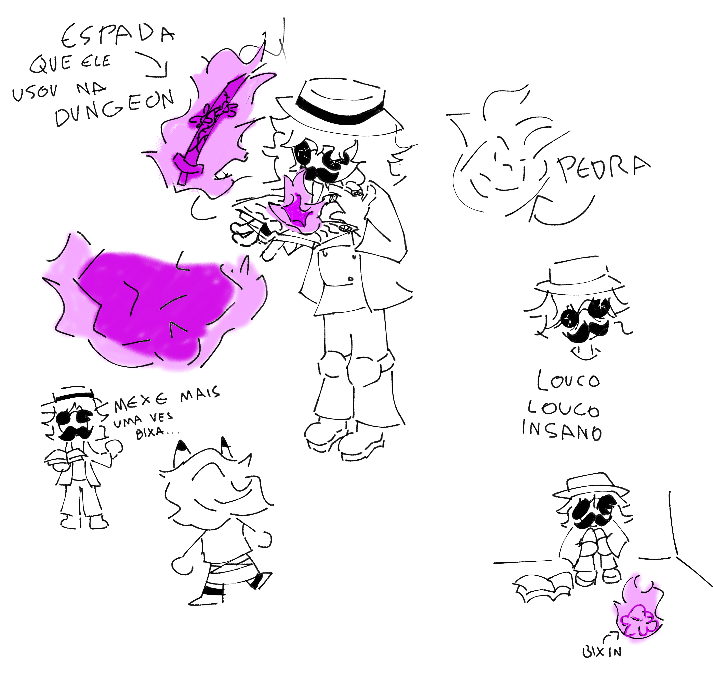

Cemto
Criado sábado 16 julho 2022
o cucas basicamente era um explorador que ficava ai viajando o mundo em busca de artefatos ja que ele n tinha magia nenhuma.
em uma dessas aventuras, ele encontrou ruinas abandonadas, naquele estado em que as pedras desmanchavam igual areia. ela era enorme, e bem longa. nao tinha ngm la, nenhun inimigo, ninguem protegendo ela...
quando mais ele anda mais ele se sente mal, com enjoo e dor de cabeça, mas ele tinha um anel magico que protejia ele de efeitos colaterais de outras magias
ele chega no final, e la esta, o livro, e apenas um livro fechado, sem nenhuma escrita interna, e ao redor do pilar onde ele estava, estava escrito algumas runas antigas que ele n reconhecia de lugar nenhum. quando ele pegou o livro, ele desmaiou. se acordou em um lugar todo preto, e uma entidade preta vindo ate ele, ele tenta fugir, mas nao consegue nem olhar pros lados. a entidade entao, se aproxima dele e toca sua testa, criando um buraco na testa dele onde uma chama roxa e formada, e entao, ele acorda
derrepente, ele esta fora da dungeon, sem explicaçao nenhuma, e quando ele vai procurar ela, ela nao existe, ela simplismente sumiu.
ele percebe que ainda esta com o livro, ele le o livro por dentro, e nao tem nada escrito. oque intriga ele e faz ele pensar que pegou um livro aleatorio e foi dormir depois, ele joga o livro fora, e continua pra sua casa, mas, o livro volta a ele, ele tenta jogar denovo, mas ele sempre volta pra mao dele, como se eles tivessem conectados.
(aaaaa o resto eu escrevo depois)
o livro tem habilidades de gerar objetos fisicos temporários, MAS, pra ele gersr esses objetos, ele tem que absorver eles antes, e quando ele absorve o item ele se transforma em escritas no livro, e o primeiro item que ele absorveu, foi uma pedra, depois sua espada (sem querer) mas agora ele pode invocar ela
atualização do livro:
basicamente ele usa o livro com as escritas dele pra invocar objetos, mas pra ele poder invocar o objeto ele precisa absorver o objeto, que quando absorvido, ele se transforma em escritas pra pode invocalo, mas isso gasta muita emergia e magia dele, por isso que ele n tem uma vastidando de objetos.
objetos invocados podem sim ser quebrados, e quando sao quebrado demoram bastante pra poderem ser spawnados, e cada vez que sao spawnados gastam magia, e sanidade tbm, mas se ele n for destruido ele pode ser desinvocado e invocado novamente, mas tbm gasta magia
por enquanto e so isso beijos
